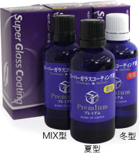

PRODUCT
SUPER GLASS COATING
深い艶を、
長く美しく。塗装を守る確かなコーティング。
大切な愛車の美しさを、もっと長く、もっと深く。
水野谷自動車のボディーコーティングは、
確かな技術と厳選した素材で、塗装をしっかりと守ります。

製品紹介
VOCを含まない
スーパーガラスコーティング

有機溶剤（VOC）を含まない環境にやさしい設計。高硬度の被膜が塗装表面を保護し、深い艶と撥水性を長期間維持します。
FEATURES
スーパーガラスコーティング 4つの特徴
-
01
長期的な耐久性
水晶（石英）を主成分とした硬質の被膜を形成。酸化や劣化がしにくく、高い耐久性が期待できます。
-
02
メンテナンスは水洗いだけ
再施工の必要はありません。汚れが落ちやすいため水の使用量も減り、節水に貢献します。
-
03
淡色から濃色まで深い艶
石英ガラスの抜群の透過性により、高級感のある輝きを最大限に表現します。
-
04
驚異的な防汚性能
独自の製品開発により、有機系コートに比べて抜群の防汚性能を実現します。
COMPARISON
スーパーガラスコーティングと他社製品との比較
| 比較項目 | スーパーガラスコーティング | 一般的なガラス系コーティング | ポリマー系コーティング |
|---|---|---|---|
| 耐久性 | 高耐久のガラス被膜で長期間持続 | 製品により持続期間に幅があります | ガラス系に比べ短めが一般的です |
| 艶・光沢 | 深い艶・高い光沢 | 艶は良好 | 艶はやや控えめ |
| 防汚性 | 非常に高い | 高い | 標準的 |
| メンテナンス性 | 非常に簡単 | やや簡単 | こまめなメンテナンスが必要 |
※上記は当社の施工実績に基づく目安です。使用環境・保管状況により異なります。
PROCESS
施工の流れ
-
01洗車・下地処理

専用シャンプーで洗車し、鉄粉・油分を除去。塗装面を最適な状態に整えます。
-
02下地処理・磨き
塗装の状態をチェックし、必要に応じて磨き上げ。小傷やくすみを整えます。
-
03コーティング施工
専用の施工ブース内で、均一にコーティング剤を塗布。硬化を促進し、被膜を形成します。
-
04最終確認・引き渡し
仕上がりをチェックし、お手入れ方法をご案内。美しい状態でお引き渡しします。
お電話でのお問い合わせ
0248-43-2455
受付時間 9:00 - 18:00 ／ 日・祝日除く